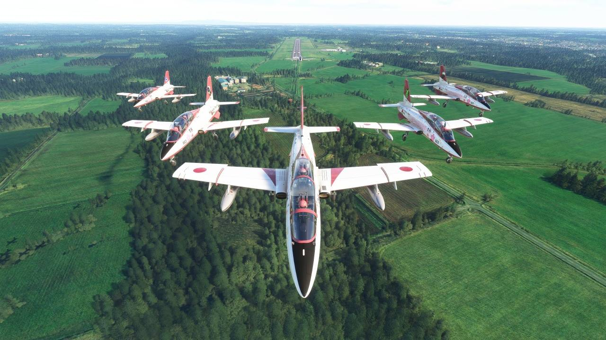
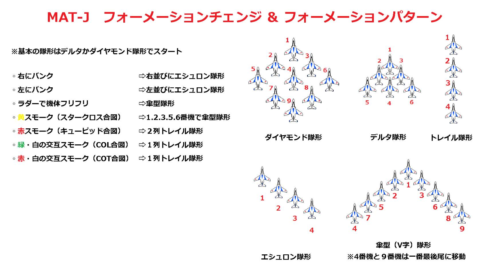
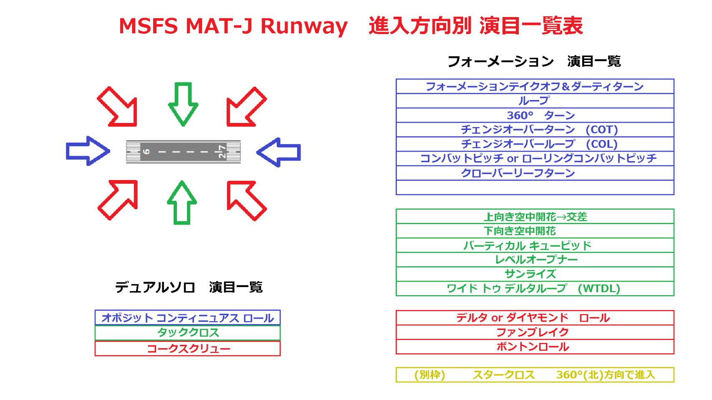
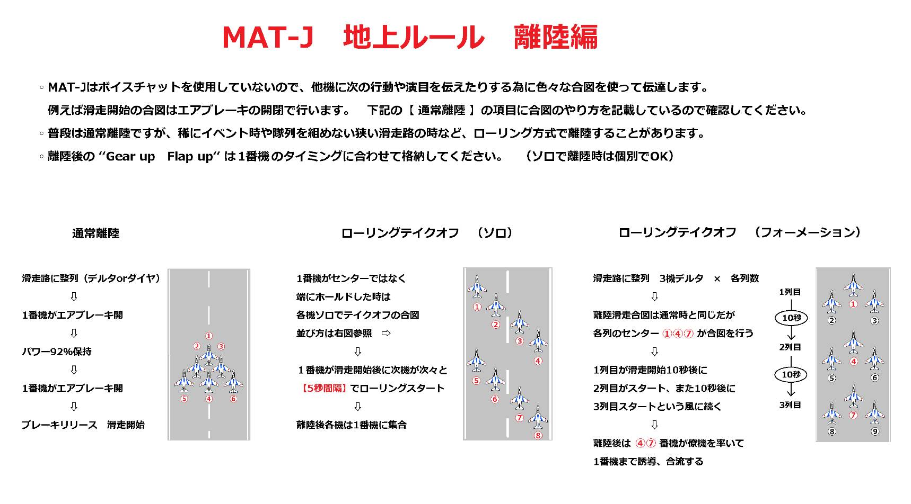
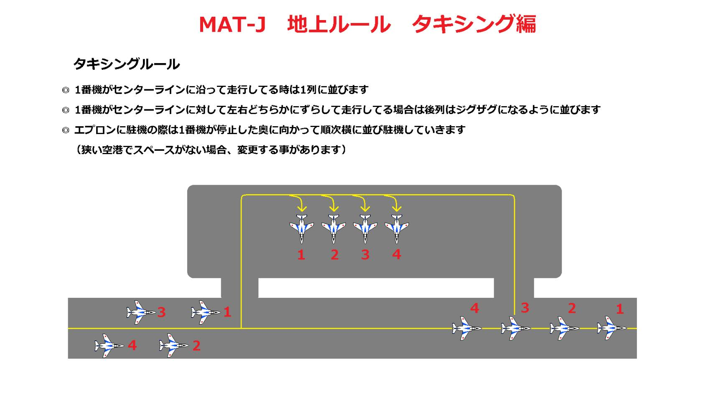

MAT-J BASIC OPERATIONS
MAT-Jは航空自衛隊アクロバットチーム「ブルーインパルス」を参考とし、演目を設定しております。その為実践に近い計器飛行を取り入れております。MAT-Jの最高難易度技はスタークロスです。
そしてなんとMAT-Jはボイスチャットを一切使用しません。
使用機体：MB-339
ゲーム内では非常に操作性がよく2020/2024で幅広く使われております。
現在ではイタリア空軍フレッチェトリコローリとチリ空軍が採用。今でも現役で空を飛んでおります。

MAT-Jが取り入れている編隊飛行隊形
MAT-Jではダイヤモンド隊形を基本隊形とし、7機以下の場合はデルタ隊形を基本隊形としております。
MAT-Jでは動いた人の早い者順でその日の機体番号が決まります。
中でも4番機は初心者に最適です。しかし編隊隊形変化が多い番号でもあります。
飛んでいる最中のMAT-J集団に途中合流する場合は一番最後尾番号または空いているポジションへ入ります。

演目進入ルート
MAT-Jでは各演目に進入角度が決まっております。

離陸滑走ルール
ボイスチャットを使用しないため、離陸にも独自のルールを設けております。

地上タキシングルール

私たちの活動
私たちは参加自由！報告義務なし
をモットーにMSFS2020/2024にて活動しているチームです。
2020年頃、創始者を中心に私たちは2ちゃんねるの一つの募集から生まれました。
昔は編隊飛行を「道場」と呼んでおり, その道場に集まってくる隊員がいつの間にか巨大な組織となりました。
そして皆の協力で編隊飛行チームを結成いたしました。
このチームには”代表”はいません。みんなが代表であり, 支えあっているチームなのです。
MEMBERS (21 PILOTS)
合図一覧
クリックで下の演目詳細へジャンプ
MANEUVERS DETAIL
JOIN US
私たちは隊員を募集しております。
また, 見学者も常に募集しております。
高校生以上という条件のみ付け加えさせてください。
向いているか向いていないかはあなた次第だ！
さぁ！まずはコンタクト
外部リンク
MAT-J アドオン一覧
アドオン一覧
現在メンテナンス中です。ご不便おかけいたします